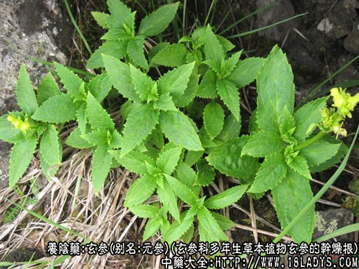
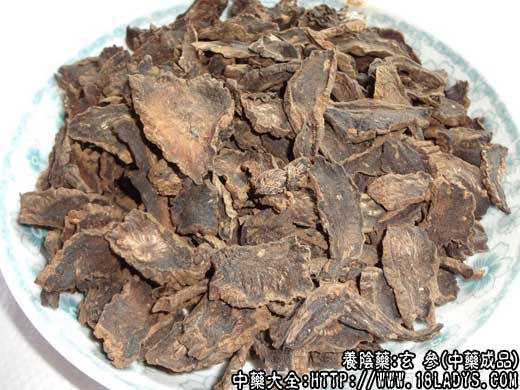
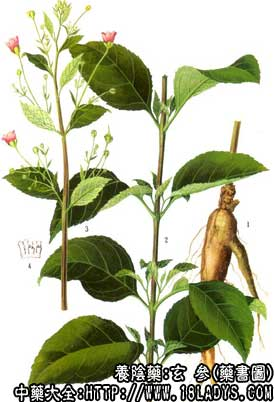

玄参为常用中药。始载《神农本草经》，列为中品。
别名；元参。
来源：为玄参科多年生草本植物玄参（浙玄参）及其同属北玄参的干燥根。多为栽培。
产地：主产于浙江、山东、湖南、湖北、四川、江西、安徽等省。其他各省多有引种。
植物形态：多年生草本，高1米左右。根数条，圆柱形或纺锤形。茎直立方形，有沟纹。叶对生，叶柄长2～4厘米，叶片狭卵形，先端尖，边缘有锯齿，被毛茸。聚伞圆锥花序，大而疏散；花萼5裂；花冠暗紫色，下部壶形，上部边缘唇形；上唇2裂片较长大，侧面2裂片小，下面裂片最小；雄蕊4枚，雌蕊1枚。蒴果卵形。
采收加工：立冬前后采挖，除去茎叶，子芽及须根，烘晒至半干，堆积3～6天，使内碴变黑，再反复对晒数次，直至全干。
性状鉴别：根呈现类圆柱形或纺锤形，有的弯似羊角，长6～20厘米，直径1～3厘米。表面灰黄色或灰褐色，有不规则的纵沟棱及横向皮孔。质坚实，不易折断，断面乌黑色，有光泽，射线纹不明显，无裂隙或少裂隙（浙江产品）。其它地区产品，微有光泽，射线纹明显，并有裂隙。气特异有焦糖气，味甘微苦。
以根条肥壮，皮细、质坚实，断面乌黑油润无裂隙者为佳。
主要成分：含玄武甙、植物甾醇、亚麻油酸、生物硷等。
药理作用：中医传统经验认为有滋阴降火作用，现代药理实验还未能完全解释玄参多方面的临床疗效，需进一步研究。
1、强心。玄参有轻度的强心作用。
2、扩张血管。对促进局部血液循环从而消除炎症，可能有一定作用。
3、降压。动物实验证实有降低血压作用。对肾型高血压降低作用更明显。
此外，玄参还具有在体外中和白喉毒素的作用。
炮制：去芦切片，生用。
性味：苦、咸、微寒。
归经：入肺、肾经。
功能：滋阴降火、润燥生津、消肿解毒。
主治：热病伤阴，口渴，便秘，发斑，咽喉肿痛，痈肿瘰疠等症。
临床应用：为滋阴降火常用药。从现代医学观点看，降火大致相当于解热、利尿、消炎，与滋养作用也有一定关系。
玄参用于热证，有滋阴增液、消炎解毒的作用；虚热、实热均可应用，但以滋阴为特长。
1、用于治疗温热病。实热伤津、烦渴、发斑，与生地同用，方如增液汤。
2、用于治虚火上炎所致的咽喉肿痛，有虚热并有其他阴虚症状者（慢性咽炎、扁桃体炎）。前人的经验说“虚火上炎必用玄参”，现代实践用玄参配生地、沙参、四叶参等治阴虚喉痛确有良好效果，方如玄参治咽汤，养阴清肺汤。
3、用于治瘰疠（颈淋巴结核、淋巴结炎）。可重用玄参，并配牡蛎、贝母，方如玄参牡丹汤。
4、用于治血栓闭塞性脉管炎。可重用玄参（其作用可能与扩张血管、改善局部血循环有关），并配银花、当归，方如四妙勇安汤，对晚期患者，有患趾青紫，开始溃烂的尤为适宜。
5、用于治疗肺热咳嗽和肺结核，取其能清肺之燥热。在润肺方剂内，可加用玄参，并配党参、杞子等补益药。
使用注意：1、脾虚便溏，或寒湿而无火者，忌用玄参。
2、产后需用凉药，如嫌知母太寒，可用玄参代替。
用量：常用量：9～12g。虚热、烦躁者，可用至18～30g。治瘰疠、脉管炎，要重用至30～90g。
处方举例：
玄参治咽汤：玄参12g，生地18g，沙参9g，四叶参30g，水煎服。
养阴清肺汤（《重楼玉钥》）：玄参12g、生地18g、麦冬9g、白芍9g、丹皮6g、川贝母6g，薄荷3g（后下），甘草3g，水煎服。
玄参牡贝汤：玄参30g、牡蛎120g（先煎）、浙贝30g，以四碗半水先煎牡蛎至二碗半，然后下玄参、浙贝，再煎至一碗，温服。
四妙勇安汤：玄参9g，当归6g，金银花9g，甘草30g，水煎，日分三次服。本方玄参、当归剂量大，多数患者服后会有腹泻的副反应，出现此情况时，应配黄芪、白术等补气健脾药调节。
注：玄参反藜芦。